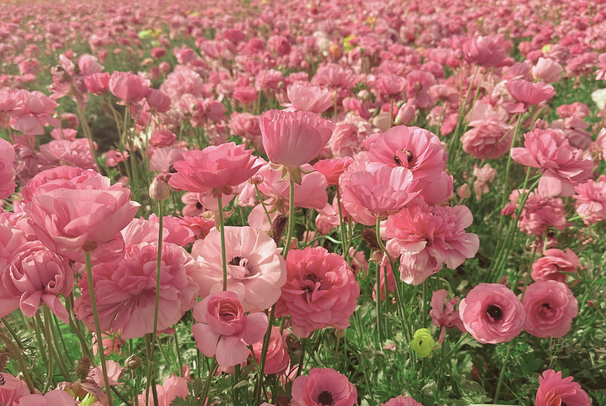

Hi! I'm Senorena, a curious and creative high school student who loves exploring the world where science, technology, and art come together. I'm fascinated by everything from medicine and articfical intelligence to web design and creative writing. Whether I'm building an application, learning about healthcare through hands-on experiences, or illustrating an idea, writing a story, or designing something new, I'm happiest when I'm creating and challenging myself. Outside of academics, I enjoy playing the viola, practicing martial arts, birding, animating, and helping other students grow more confident in math. I'm always excited to learn something new, meet people with different perspectives, and find meaningful ways to combine my interests to make a positive impact. Contact information: Email: senorenaraja@gmail.com Number: 781-671-4584 LinkedIn: linkedin.com/in/senorena-raja GitHub: github.com/SenoRaja